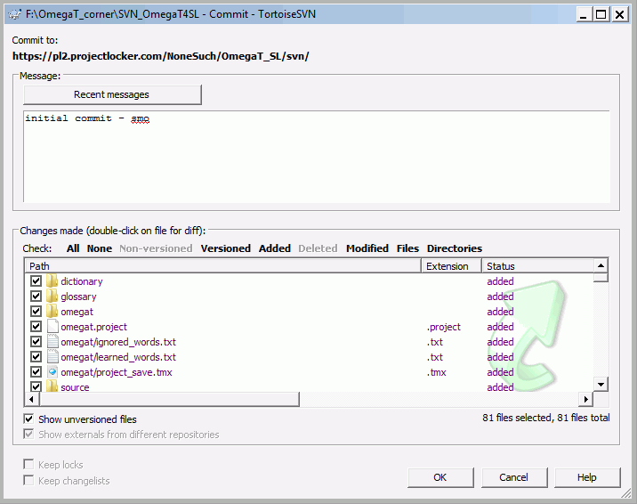

La traduction collaborative proposée par OmegaT fonctionne sur la base de contrôle des versions et des révisions. Cette fonction est très utilisée au sein de la communauté des créateurs de logiciels pour contrôler les changements apportés aux codes d'un programme et permettre à l'équipe de développement de collaborer sans entrave. OmegaT prend en charge deux logiciels populaires de gestion des versions, Apache Subversion (souvent abrégé SVN, d'après le nom de la commande svn) et Git. Les avantages que les systèmes de gestion de versions apportent à une équipe de traducteurs peuvent être résumés comme suit :
-
Plusieurs membres d'une équipe peuvent travailler simultanément sur le projet de traduction sans se gêner les uns les autres
-
Ils peuvent partager leurs outils de traduction, par exemple, la mémoire de traduction du projet et ses glossaires
-
Par défaut, une version à jour des données partagées est mise à la disposition du reste de l'équipe toutes les trois minutes
-
Le système conserve les différentes versions des données partagées
-
Les conflits (des traductions alternatives d'un même segment ou d'une entrée du glossaire par exemple) peuvent être surveillés, résolus et fusionnés.
Les termes qui vont être utilisés dans le texte ci-dessous méritent une courte explication :
-
Le serveur des logiciels de gestion des versions - c'est-à-dire le serveur SVN ou Git - correspond à l'environnement dans lequel le travail commun est gardé et conservé sur le net. Le serveur peut exister dans un réseau local mais, dans la majorité des cas, il sera disponible sur Internet, c'est-à-dire par le biais d'une adresse URL. Un membre de l'équipe, l'administrateur du projet, doit être en mesure de s'occuper du serveur. C'est-à-dire qu'il doit mettre en place l'environnement, importer le projet OmegaT, attribuer des droits d'accès aux membres de l'équipe, résoudre les conflits, etc.
-
Client des logiciels de gestion de versions : pour communiquer avec le serveur, un client SVN ou Git doit être installé sur les ordinateurs des gestionnaires de projet impliqués dans le projet OmegaT. Parmi les clients très populaires de l'environnement Windows on trouve : TortoiseSVN et TortoiseGit. Les autres systèmes d'exploitation (Linux, OS X) proposent des logiciels similaires.
-
référentiel : l'endroit dans lequel le matériel partagé est sauvegardé et maintenu, que ce soit sur un réseau d'accès local ou sur internet. Les membres du projet se connectent au référentiel par le biais du client de leur logiciel de gestion de versions.
-
extraction : opération qui crée une copie du travail depuis le référentiel sur l'ordinateur local. Le serveur conserve les informations concernant les extractions afin que les validations (voir ci-dessous) puissent être effectuées dans l'ordre.
-
validation : lorsqu'une nouvelle version locale du matériel extrait est prête, elle peut être enregistrée dans le référentiel et ainsi être mise à la disposition du reste de l'équipe. Le serveur s'assure que tous les problèmes causés par des changements contradictoires (ex. : si deux personnes travaillent en même temps sur le même contenu extrait) sont résolus.*
-
administrateur : la personne responsable de la création et de l'entretien du référentiel, c.-à-d. qui s'occupe de la partie serveur. Afin d'éviter tous problèmes, il est préférable qu'une seule personne dispose de ces droits (au moins au départ).
-
utilisateur : un membre de l'équipe (=qui collabore sur le projet commun).
Deux possibilités existent pour exploiter un serveur SVN : installer SVN sur votre propre serveur ou utiliser un service hébergé. Lorsque vous utilisez un service externe, soyez conscients des risques possibles en termes de confidentialité, dans la mesure où vous chargez un document sur un serveur qui échappe à votre contrôle direct. Une autre solution consiste à définir un serveur SVN privé (ex. : si vous possédez déjà un serveur Apache qui inclut le logiciel en question - ex. : VisualSVN)
Une fois le serveur SVN disponible, les gestionnaires du projet doivent installer un client SVN localement afin de pouvoir gérer le contenu du projet sur leur ordinateur. Pour Windows, nous recommandons TortoiseSVN. Pour Mac, vous pouvez télécharger le client surSourceForge. Pour Linux, voir Commandes de Subversion et Scripts.
La procédure présentée ici se base sur le serveur libre SVN (limité à deux utilisateurs) proposé par ProjectLocker (site en anglais). Veuillez noter que le créateur du référentiel reçoit implicitement les droits d'administrateur du référentiel créé. Connectez-vous d'abord au site ou (s'il s'agit de votre première visite sur le site) enregistrez-vous et notez votre nom d'utilisateur et votre mot de passe pour vos projets futurs.
-
Créez un nouveau projet sur ProjectLocker
-
Saisissez le nom et la description du référentiel. (
OmegaTetOmegaT SL Localizationdans l'exemple) -
Choisissez
-
Cliquez sur (créer un projet)
Ouvrez l'affichage Projects de votre compte. L'URL affichée en dessous de Project Services sera utilisée par SVN pour connecter les clients au serveur SVN que vous venez de créer. C'est également à cet endroit que vous pourrez ajouter des membres de l'équipe au projet et leur attribuer des droits d'accès. Veuillez noter que les membres de l'équipe doivent être enregistrés pour pouvoir être ajoutés au projet (remarque : dans la version gratuite de ProjectLocker, seuls deux utilisateurs par projet sont autorisés).
Les projets peuvent être gérés en fonction de votre mode de développement et de vos besoins. Comme pour les projets OmegaT,
vous devrez avoir des référentiels séparés pour les différentes paires de langues. Au sein d'une paire de langues donnée,
il est également préférable d'avoir des référentiels séparés pour les différents sujets et/ou clients. Il est également possible
d'avoir un seul référentiel avec des sous dossiersProjet1, Projet2, etc., et de partager le matériel commun par le biais de dossiers communs tels que tm, glossary et dictionary.
Pour cet exemple, nous avons choisi, pour des raisons de simplicité, de ne donner qu'un référentiel au projet OmegaT.
Pour l'instant, le référentiel est vide. Créez tout d'abord un dossier client vide sur votre disque. Créez un dossier vide dans lequel vous conserverez votre projet et faites un clic-droit dessus. Sélectionnez TortoiseSVN > Checkout. La boîte de dialogue suivante apparaît :

Entrez l'URL fournie par ProjectLocker dans le champ URL of repository (URL du référentiel). Assurez-vous que le champCheckout directory(Répertoire d'extraction) est correct, c'est-à-dire qu'il définit le dossier vide que vous avez créé, et appuyez surOK. Une fois l'opération terminée, vous pouvez vérifier le dossier en question : il doit maintenant contenir un sous-répertoire .svn et un signe vert OK sur son icône qui montre que le contenu du dossier est à jour.
Lors de l'étape suivante, nous allons ajouter les fichiers d'OmegaT dans le répertoire local. Les fichiers suivants doivent être partagés par les membres de l'équipe et donc être inclus dans tous les cas :
-
le fichier de projet OmegaT -
omegat.project -
la mémoire de traduction -
omegat\project_save.tmx -
le contenu du dossier source
-
la définition des filtres spécifiques au projet -
omegat\filters.xml
L'administrateur peut aussi décider d'ajouter les dossiers suivants ainsi que leurs contenus : tm, glossary et dictionary. Il peut être intéressant de partager les fichiers ignored_words.txt et learned_words.txt situés dans le dossier omegat pour qu'ils soient mis à jour par l'ensemble de l'équipe. Dans tous les cas, évitez d'ajouter les fichiers bak , project_stats.txt et project_stats_match.txt dans le sous-dossier omegat car ils ne feraient qu'encombrer le référentiel sans rien apporter au projet. Il est possible de faire de même pour le dossier
target (cible) et son contenu.
Après avoir copié les fichiers requis dans le répertoire d'extraction, vous remarquerez que l'icône a changé : le signe vert OK est remplacé par un point d'exclamation rouge, ce qui indique le changement effectué dans la copie locale du référentiel. Les deux étapes suivantes mettront à jour la version du serveur :
-
ajoutez les fichiers copiés dans la version locale du référentiel : cliquez-droit sur le répertoire commun local et sélectionnezTortoiseSVN > Add. (Ajouter) Une boîte de dialogue s'ouvre, laissez toutes les options telles qu'elles sont réglées par défaut et cliquez sur OK. Une fenêtre Add Finished! semblable à celle ci-dessous va apparaître :

Le contenu du répertoire d'extraction sera annoté en conséquence :

-
validez les modifications locales sur le serveur : cliquez-droit sur le répertoire d'extraction local et sélectionnez SVN Commit.... La fenêtre de validation s'ouvre (voir ci-dessous) Vérifiez les changements à effectuer (dans le cas présent, les dossiers et les fichiers ajoutés).
Entrez un message approprié dans la fenêtre de message et appuyez sur OK. La fenêtre de validation s'ouvre et montre le progrès de la commande de validation. Elle validera d'abord les contenus actuels dans le référentiel du serveur puis elle mettra à jour la copie locale du référentiel - soit, le contenu du sous-dossier .svn - afin qu'elle soit à jour par rapport à la dernière version du référentiel.
-
mettez à jour les fichiers locaux à partir de la copie locale du référentiel - les modifications reçues depuis le référentiel du serveur sont dans le sous-dossier .svn mais pas encore dans les fichiers et dans les dossiers. Pour mettre à jour les fichiers locaux, cliquez-droit sur le répertoire d'extraction et sélectionnez SVN Update. Vérifiez le contenu du dossier pour confirmer que la copie locale du référentiel et les fichiers et dossiers correspondants sont conformes à la dernière version du serveur :

Lorsque le projet en équipe est installé, les membres de l'équipe besoin que d'OmegaT pour avoir accès au projet en équipe. Ils doivent d'abord cliquer sur Projet > Télécharger projet en équipe. Le projet sera alors extrait dans un dossier local. Les références sont stockées de sorte qu'il n'est pas nécessaire de les entrer à chaque fois. Sous Linux, si OmegaT vous demande à nouveau vos références, vous pouvez cocher la case Forcer l'enregistrement du mot de passe en texte en clair.
Pour les utilisations ultérieures, il suffit d'ouvrir le projet comme n'importe quel autre projet OmegaT. OmegaT le reconnaîtra comme étant un projet en équipe et le synchronisera automatiquement toutes les trois minutes (synchronisation par défaut).